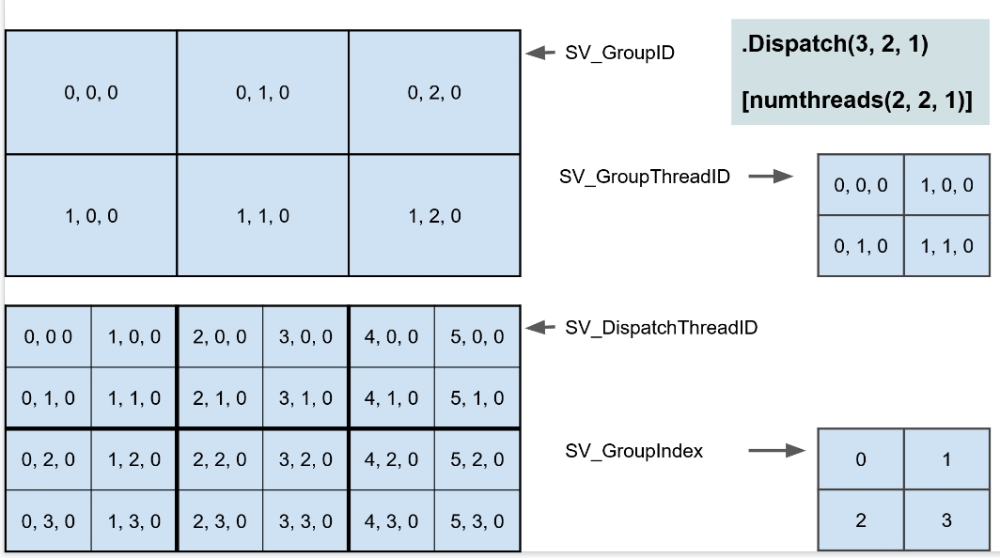

기본 개념
Kernel / Group / Thread
Kernel <--- 작업 단위
|
-------------------
| | |
Group 0 Group 1 Group 2 <--- 그룹 (SV_GroupID)
| | |
[T T T] [T T T] [T T T] <--- 쓰레드 (SV_GroupThreadID)
| 용어 |
내용 |
예) |
| Kernel |
GPU에서 실행되는 컴퓨트 셰이더 함수(작업의 단위) |
#pragma kernel 함수이름 |
| Group |
쓰레드의 그룹. 동시 쓰레드 실행 |
.Dispatch |
| Thread |
Kernel이 실행될 때 생성되는 하나의 실행 단위 |
[numthreads(8, 8, 1)] |
|
|
| SV_GroupID |
.Dispatch(3, 2, 1) |
| SV_GroupThreadID |
[numthreads(2, 2, 1)] |
| SV_DispatchThreadID |
SV_GroupID * numthreads + SV_GroupThreadID |
| SV_GroupIndex |
[0, (numthreadsX * numthreadsY * numThreadsZ) – 1] |

/// ====================
/// a.cs
/// ====================
ComputeShader _computeShader;
int kernelIndex = _computeShader.FindKernel("Func_KernelIndex_0"); // 0
int threadGroupsX = 3;
int threadGroupsY = 2;
int threadGroupsZ = 1;
_computeShader.Dispatch(kernelIndex, threadGroupsX, threadGroupsY, threadGroupsZ); // 쓰레드 그룹 6개(3x2x1)
// 총 스레드 수
// = 그룹 갯수 * 그룹당 쓰레드 갯수
// = .Dispatch(x, y, z) * numthreads(x, y, z)
// = 3x2x1 * 2x2x1 = 6*4 = 24
/// ====================
/// a.compute
/// ====================
#pragma kernel Func_KernelIndex_0
#pragma kernel Func_KernelIndex_1
[numthreads(2, 2, 1)] // 그룹당 4쓰레드(2x2x1 )
void Func_KernelIndex_0()
uint3 groupID : SV_GroupID
uint3 threadID : SV_GroupThreadID
uint3 dispatchID : SV_DispatchThreadID
uint groupIndex : SV_GroupIndex
// SV_DispatchThreadID == SV_GroupID * numthreads + GroupThreadID
// dispatchID == groupID * uint3(2, 2, 1) + threadID;
// SV_GroupIndex == SV_GroupThreadID.z * numthreads.x * numthreads.y
// + SV_GroupThreadID.y * numthreads.x
// + SV_GroupThreadID.x
// groupIndex == threadID.z * 2 * 2
// + threadID.y * 2
// + threadID.x;
uint index = dispatchID.x + dispatchID.y * 6;
_Buffer[index] = index;
// 0 1 2 3 4 5
// 6 7 8 9 10 11
// 12 13 14 15 16 17
// 18 19 20 21 22 23
_Buffer[index] = groupID.x; | _Buffer[index] = groupID.y;
// 0 0 1 1 2 2 | 0 0 0 0 0 0
// 0 0 1 1 2 2 | 0 0 0 0 0 0
// 0 0 1 1 2 2 | 1 1 1 1 1 1
// 0 0 1 1 2 2 | 1 1 1 1 1 1
_Buffer[index] = threadID.x; | _Buffer[index] = threadID.y;
// 0 1 0 1 0 1 | 0 0 0 0 0 0
// 0 1 0 1 0 1 | 1 1 1 1 1 1
// 0 1 0 1 0 1 | 0 0 0 0 0 0
// 0 1 0 1 0 1 | 1 1 1 1 1 1
_Buffer[index] = dispatchID.x;| _Buffer[index] = dispatchID.y
// 0 1 2 3 4 5 | 0 0 0 0 0 0
// 0 1 2 3 4 5 | 1 1 1 1 1 1
// 0 1 2 3 4 5 | 2 2 2 2 2 2
// 0 1 2 3 4 5 | 3 3 3 3 3 3
_Buffer[index] = groupIndex;
// 0 1 0 1 0 1
// 2 3 2 3 2 3
// 0 1 0 1 0 1
// 2 3 2 3 2 3